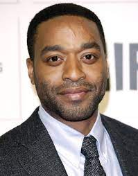
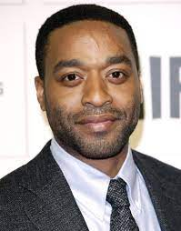
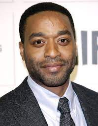

Informações sobre o filme
Elenco: Benedict Cumberbatch, Chiwetel Ejiofor, Elizabeth Olsen
Direção: Sam Raimi
Roteiro: Michael Waldron, Scott Derrickson
Título original: Doctor Strange in the Multiverse of Madness
 


Elenco: Benedict Cumberbatch, Chiwetel Ejiofor, Elizabeth Olsen
Direção: Sam Raimi
Roteiro: Michael Waldron, Scott Derrickson
Título original: Doctor Strange in the Multiverse of Madness

Em Doutor Estranho no Multiverso da Loucura, após derrotar Dormammu e enfrentar Thanos nos eventos de Vingadores: Ultimato, o Mago Supremo, Stephen Strange (Benedict Cumberbatch), e seu parceiro Wong (Benedict Wong), continuam suas pesquisas sobre a Joia do Tempo. Mas um velho amigo que virou inimigo coloca um ponto final nos seus planos e faz com que Strange desencadeie um mal indescritível, o obrigando a enfrentar uma nova e poderosa ameaça. O longa se conecta com a série do Disney+ WandaVision e tem relação também com Loki. O longa pertence a fase 4 do MCU onde a realidade do universo pode entrar em colapso por causa do mesmo feitiço que trouxe os vilões do Teioso para o mundo dos Vingadores e o Mago Supremo precisará contar com a ajuda de Wanda (Elizabeth Olsen), que vive isolada desde os eventos de WandaVision.
Em breve nos cinemas